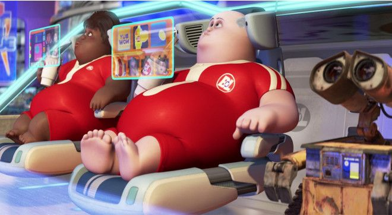

1. Asistente personal
La IA podrá ayudarnos a organizar nuestra semana, planificar actividades, preparar comidas y realizar diferentes tareas.
💬 "Organizame mi semana."
La inteligencia artificial probablemente pasará de ser una herramienta que usamos ocasionalmente a convertirse en una parte importante de nuestra vida cotidiana.
Descubrir el futuro 🚀
La IA podría cambiar la forma en que estudiamos, trabajamos, nos comunicamos y utilizamos la tecnología.
La IA podrá ayudarnos a organizar nuestra semana, planificar actividades, preparar comidas y realizar diferentes tareas.
La IA no necesariamente eliminará todos los trabajos. Es probable que cambie las tareas que realizan las personas.
La combinación de robots e inteligencia artificial permitirá crear máquinas capaces de ver, entender y reaccionar ante diferentes situaciones.
Podrían utilizarse en fábricas, hospitales, agricultura, construcción y hogares.
En lugar de aprender a utilizar programas complicados, podremos comunicarnos con la tecnología utilizando nuestro propio lenguaje.
La IA podrá comprender diferentes tipos de información al mismo tiempo: texto, voz, imágenes, videos, documentos y datos.
La inteligencia artificial también generará nuevas profesiones relacionadas con la tecnología.

La inteligencia artificial puede traer muchos beneficios, pero también será necesario resolver diferentes problemas.
La IA puede generar información que parece real pero que no siempre es correcta.
Será importante proteger los datos personales utilizados por los sistemas de IA.
Algunos trabajos pueden transformarse y algunas tareas podrían automatizarse.
Será necesario evitar el uso de la IA para estafas y ataques más sofisticados.
El futuro probablemente no será simplemente que la IA reemplace a los humanos.
La IA será una herramienta cada vez más poderosa para estudiar, trabajar, crear y resolver problemas.
"Internet puso la información al alcance de todos."
"La IA está poniendo cada vez más capacidad de hacer cosas al alcance de todos."